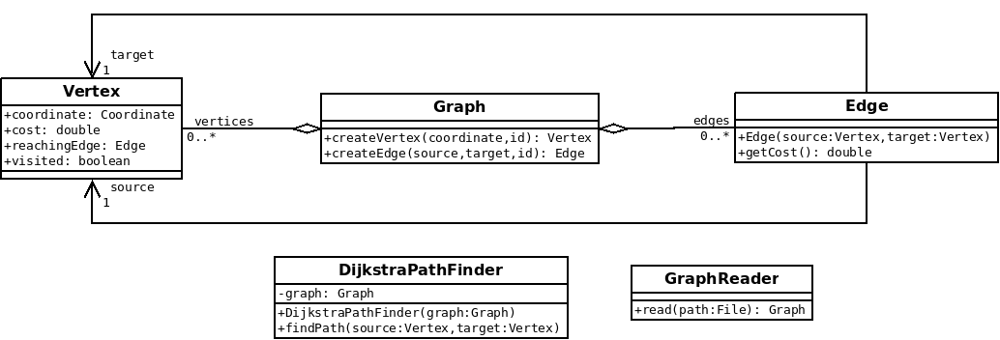
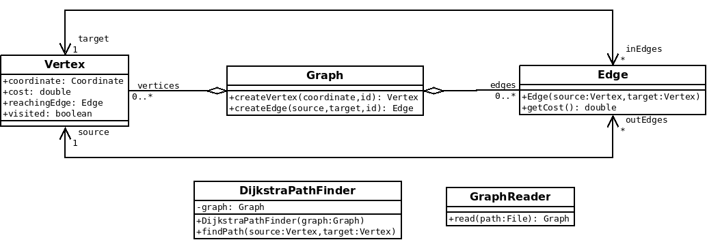

tp-refactoring-graph
Introduction
Dans ce TP, nous allons réfactorer une application qui charge un graphe à partir d'un fichier XML et calcul le plus court chemin entre deux sommets.
Les objectifs sont les suivants :
- Rendre le code plus robuste
- Optimiser le calcul de plus court chemin
- Rendre le calcul de plus court chemin plus générique
- Améliorer les entrées/sorties du programme
Pour celà, nous allons faire une revue de code et procéder par étape.
Démarrage
- Cloner le projet https://github.com/mborne/tp-refactoring-graph
mkdir ~/workspace_pattern
cd ~/workspace_pattern
git clone https://github.com/mborne/tp-refactoring-graph
cd tp-refactoring-graph
# vérifier que vous êtes bien sur la branche "initial"
git branch0.1 - Blinder les constructions, manipulation et chargement de graphe
Problème : Il y a trop de fonctionnalités exposées pour que l'on puisse refactorer facilement l'algorithme de plus chemin.
- Mettre en place une fabrique pour créer les sommets :
graph.createVertex(coordinate,id) - Mettre en place une fabrique pour créer les arcs :
graph.createEdge(source,target,id) - Supprimer les setters

0.2 - Optimiser le calcul du plus court chemin (indexation des arcs entrants et sortants)
Problème : Chaque fois que l'on recherche les arcs sortants d'un sommet, on parcourt l'ensemble du tableau des arcs. Il convient d'indexer au niveau des sommets les arcs entrant et sortants.
- Ajouter des propriétés
inEdgesetoutEdgessur les sommets - S'assurer que
inEdgesetoutEdgesest automatiquement renseignés lorsque l'on créé des arcs.

0.3 - Permettre le calcul en parallèle de plusieurs plus court chemin sur un même graphe en mémoire
Problème : Les sommets étant porteurs des informations spécifiques à l'algorithme de calcul de plus court chemin (
reached,visited, etc.), il est impossible de lancer deux calculs de plus chemin en parallèle sur le même graphe.
- Report des informations de Vertex spécifiques au calcul de plus court chemin dans une classe
PathVertex - Ajout d'une propriété
List<PathVertex> reachedVerticesdansDijkstraPathFinder.
0.4 - Permettre aussi le calcul d'un arbre de plus court chemin (donc d'isochrones)
Problème : Nous voulons aussi pouvoir calculer des isochrones. Il est donc intéressant de pouvoir calculer un arbre du plus court chemin. L'algorithme est guère différent du calcul de plus court chemin de disktra : Il suffit de s'arrêter non pas lorsque l'on a atteint un sommet de destination, mais lorsque l'on n'a plus aucun sommet à visiter.
- Ajouter le concept de
PathTreeporteur d'une liste dePathVertex - Coder une classe
PathTreeBuilderqui construit l'arbre du plus court cheminbuildTree(origin: Vertex) - Réutiliser cette classe dans
DijkstraPathFinder
0.5 - Stratégie d'arrêt du calcul de l'arbre du plus court chemin
Problème : Il faut pouvoir s'arrêter de calculer l'arbre soit quand on atteint un sommet particulier, soit quand on a atteint une distance limite.
- Proposer une méthode basée sur une stratégie pour arrêter le calcul de l'arbre
- Implémenter une stratégie pour arrêter le calcul dans le contexte
DijkstraPathFinder - Implémenter une stratégie pour limiter le calcul à une distance maximale pour le calcul d'isochrone
0.6 - Permettre le choix entre Dijkstra et A-star
Problème : On souhaite pouvoir
- Mettre en place une stratégie
NextVertexFinderdansPathTreeBuilderavec deux implémentationsDijkstraNextVertexFinderAStarNextVertexFinder
Idées pour la suite
Ecrire ̀
Graphdans différents formats pour être en mesure de le visualiser avec des outils standards (DOT/GraphVIZ, GeoJSON, ...)Ecrire
PathTreedans sous forme d'uneMultiLineStringMWKT où le M est le coût depuis l'origine du parcours.Ajouter une géométriede type LineString sur les Edge et se baser dessus pour le calcul du coût
Permettre l'utilisation soit d'un fichier .xml, soit d'un dossier contenant deux fichiers CSV (vertex.csv et edge.csv)
Guide : interface GraphReader, class XmlReader et class CsvReader; class GraphReaderFactory
- Permettre les graphes stockés en base de données
Guide : Graph, DefaultGraph, DatabaseGraph